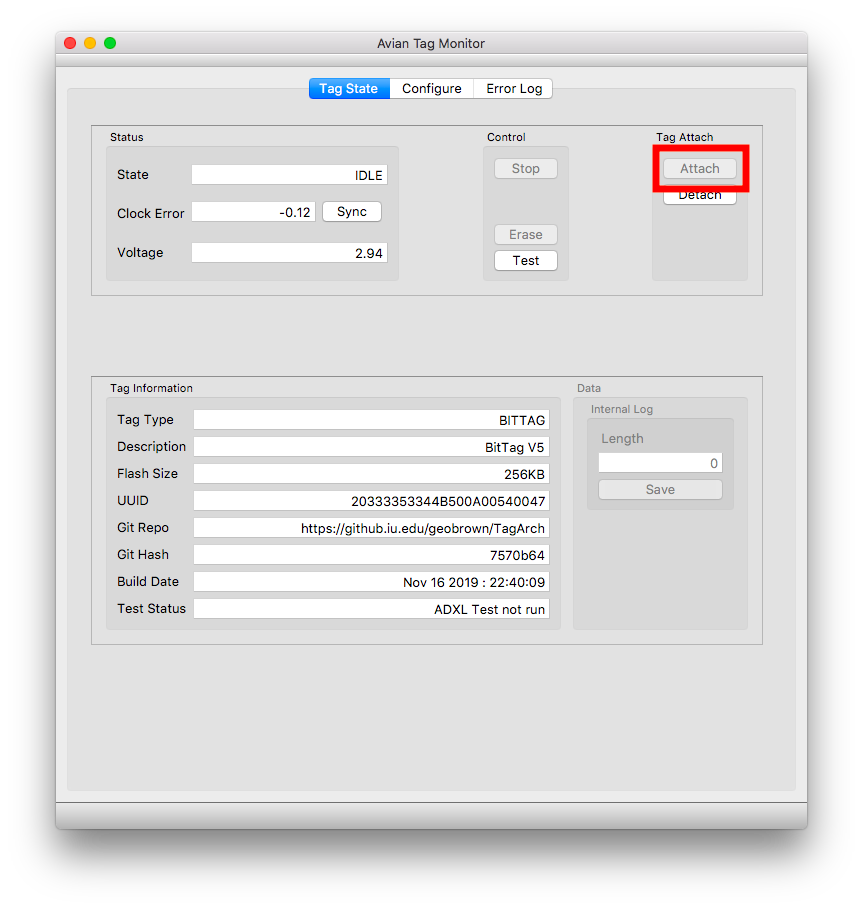
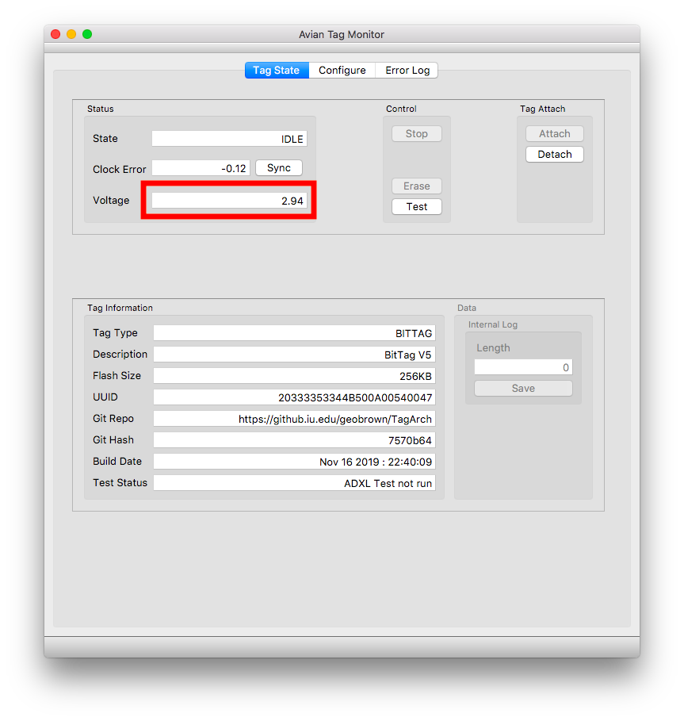

Preparing for Flight
Preparing BitTags for flight requires the following steps:
- Charging – be prepared to charge each tag for at least 2 days
- Configuring – the data collection protocol including start/end times, hibernation periods, and sensor parameters.
- Insulating – after configuration the test points should be immediately covered with insulating tape
- Harness attachment
In this guide we discuss 1-3. Note some of the photos were made with earlier versions of the tags and tag bases; however, the principles remain the same.
Visual Glossary
Bit Tags
Charger Bases
Programmer Base
Allows data transfer between Bit Tags and computer, for configuration and data downloading
Mini-USB Cable
Insulating Tape (3mm Kapton)
Tape Application Sticks (4mm width)
Harness Material
Scissors
Monitor Program
btviz Program
BitTags
Specifications
-
Weight (Without Harness) 0.64g
-
Dimensions 22Lx9Wx6H mm
-
Run Time (Depends on mode, limited by battery size)
-
Bits Per Second 239 hours (~10 days)
-
Counts per Minute 2395 hours (~100 days)
-
Counts per 4 Minutes 9900 hours (~414 days)
-
Counts per 5 Minutes 8700 hours (~362 days)
-
-
Battery Capacity 5.5 mAh
-
Average Current Consumption < 1uA
-
CPU STM32L432KC
-
Accelerometer ADXL362
-
Clock Accuracy ±3ppm
Pre-Flight
1. Charge Bit Tags
- Check to make sure BitTag makes contact with charger.
- Bit Tags typically take 48-27 hours to charge.
- Charging is Not complete when the battery indicator turns from red to green. To fully charge, batteries must be held at their charge voltage for 24-48 hours.
-
Remove Bit Tags when done charging. Unused Bit Tags can store for 1-2 months before needing to be recharged.
-
To remove, reverse the installation process.
2. Configure Bit Tags
Note: Images in this section need updating for newer software
- Open the monitor program.
- Click “Attach”
- Check that battery voltage is 3.0 volts or greater. If not, detach and recharge. While still functional, battery voltage below 3.0 volts will result in suboptimal runtimes.


- If Bit Tag is in a state other than “IDLE”, you may need to “Stop” and then “Erase” Bit Tag.
- Once the tag is in the “idle” state, run the internal tests (“Test”) and then synchronize the clock “Sync”.
- If any tests fail, you should not use the tag.
- Click into the “Configure” tab.
- Schedule BitTag Data Collection
- Select Data Type Log Format based upon experiment requirements
- Activity Bit Per Second: Gives second-by-second log of whether or not the animal is active. Highest resolution data. Run Time of around 10 days.
- Activity Bit Count Per Minute: Records the percentage of each minute the animal was active. Run Time of around 100 days.
- Activity Bit Count Per Four/Five Minutes: Same as Activity Bit Count Per Minute, but over four or five minute intervals. Lowest resolution, but allows Run Time of around 365 days.
3. Insulate Bit Tags
4 Build Harnesses
See section ???
Post-Processing
1 Recovery
- Place Bit Tag into Programmer Base.
- Note: Ensure Programmer Base is plugged into the computer first.
- Open the monitor program and attach.
- Save data. Important: Save your data as a “.txt” file.
- Note: The data length may sometimes show up as zero, even if there is saved data onboard.
- Detach the BitTag and remove from base.
2 Data Visualization
See Section ???
-
Open btviz
-
To import data click ‘load’ and select data file (data file should have a .txt extension)
You may also use your mouse to visually select these times:
-
Double-click on the chart with the Left Mouse Button to set the Start time (One-finger double-click on Mac).
-
Double-click on the chart with the Right Mouse Button to set the End time (Double-click with two fingers, or while holding Control (⌃) on Mac).
-
Click “Zoom”
You may export your data in a variety of formats:
- PDF/PNG: Saves the currently displayed figure as an image
- CSV: Saves all data currently visible in the image as a .csv file of data points.